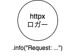
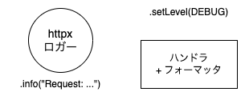
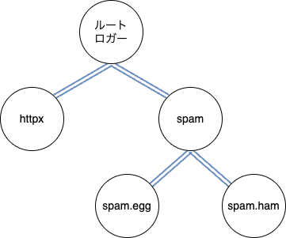
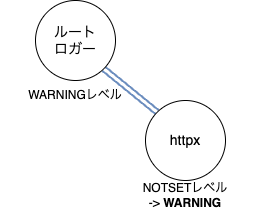
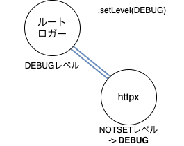
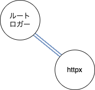
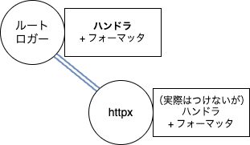

標準ライブラリのlogging、レゴブロックのように組合せてロギングできることを理解しよう！
標準ライブラリのlogging、レゴブロックのように組合せてロギングできることを理解しよう！
- Event:
PyCon JP 2025（広島）
#pyconjp_3- Presented:
2025/09/27 nikkie
皆さん、自信 を持って標準ライブラリのloggingを使えていますか？
loggingモジュールを理解しましょう！（Takeaway）
ロガー、ハンドラ といった構成要素を理解する
構成要素を 組合せ てロギングできることを理解する
レゴブロックのように組合せて（IMO）
本トークの対象者
前提：Pythonでロギングを実装した経験 あり
loggingモジュールの使用経験は問いません
「loggingモジュールいまいちわからないんだよな...」、どんぴしゃターゲットです！
お前、誰よ
nikkie ／ nikkie ／ @ftnext / Python歴8年
機械学習エンジニア・LLM・自然言語処理（We're hiring!）
LLMアプリケーション開発で、 LLMの入出力をロギング してすべてを分かりたい（束縛系）
5章構成 [3]
loggingモジュールの構成要素
ロガーのレベル
ルートロガーへの 伝播 （組合せたロギング）
現実世界のライブラリのロギング実装への対処
落穂拾い
Chapter 1: loggingモジュールの構成要素 [4]
ロガー
ハンドラ
フォーマッタ
フィルタ
HTTPXを例に 実際のログを見ながら [5] 構成要素を紹介
ロガー
ライブラリ 作者 はロガーを使って プログラム実行中のイベントを記録 する
イベントの重要性（レベル） + メッセージ
HTTPXの中にあるロギング
class Client(BaseClient):
def _send_single_request(self, request: Request) -> Response:
logger.info(
'HTTP Request: %s %s "%s %d %s"',
request.method,
request.url,
response.http_version,
response.status_code,
response.reason_phrase,
)ログのレベル [8]
レベル |
メソッド |
いつ使うか |
DEBUG |
|
おもに問題を診断するときにのみ関心があるような、詳細な情報。 |
INFO |
|
想定された通りのことが起こったことの確認。 |
WARNING |
|
想定外のことが起こった、または問題が近く起こりそうであることの表示。 |
ERROR |
|
より重大な問題により、ソフトウェアがある機能を実行できないこと。 |
CRITICAL |
|
プログラム自体が実行を続けられないことを表す、重大なエラー。 |
ロガーの取得に logging.getLogger()
logger = logging.getLogger("httpx")ライブラリ ユーザ がログを 見る には
logger = logging.getLogger("httpx")
class Client(BaseClient):
def _send_single_request(self, request: Request) -> Response:
logger.info(
'HTTP Request: %s %s "%s %d %s"',
request.method,
request.url,
response.http_version,
response.status_code,
response.reason_phrase,
)HTTPXに仕込まれたログを見るためのコード
httpx_logger = logging.getLogger("httpx")
httpx_logger.setLevel(logging.DEBUG)
console_handler = logging.StreamHandler()
detailed_formatter = logging.Formatter(
"%(asctime)s | %(levelname)s (%(name)s) | %(filename)s:%(funcName)s:%(lineno)d - %(message)s"
)
console_handler.setFormatter(detailed_formatter)
httpx_logger.addHandler(console_handler)
1️⃣ ユーザもロガーを取得
ライブラリユーザも都度
getLogger[10]
httpx_logger = logging.getLogger("httpx")
httpx_logger.setLevel(logging.DEBUG)
2️⃣ ロガーの レベルを設定 - Logger.setLevel()
ロガーのレベル以上の重要度のメッセージを記録、未満は無視
今回は
DEBUGレベル以上を記録する（INFO含む）
httpx_logger = logging.getLogger("httpx")
httpx_logger.setLevel(logging.DEBUG)
📌ロガーは 自身のレベル以上 の重要度のメッセージを 記録
|
記録する（ログレコード生成） |
|
無視 |
3️⃣ 出力先 を設定 - ハンドラ
console_handler = logging.StreamHandler()
detailed_formatter = logging.Formatter(
"%(asctime)s | %(levelname)s (%(name)s) | %(filename)s:%(funcName)s:%(lineno)d - %(message)s"
)
console_handler.setFormatter(detailed_formatter)
httpx_logger.addHandler(console_handler)
% uv run example.py
HTTP Request: GET https://peps.python.org/api/peps.json "HTTP/1.1 200 OK"ハンドラがログレコードを出力先に振り分ける
ストリーム
ファイル
などなど（logging.handlers）
4️⃣ 見た目の設定 - フォーマッタ
フォーマッタがログレコードに書式を適用し、それをハンドラが出力
detailed_formatter = logging.Formatter(
"%(asctime)s | %(levelname)s (%(name)s) | %(filename)s:%(funcName)s:%(lineno)d - %(message)s"
)
console_handler.setFormatter(detailed_formatter)
書式は ログレコードの属性名 を指定
detailed_formatter = logging.Formatter(
"%(asctime)s | %(levelname)s (%(name)s) | %(filename)s:%(funcName)s:%(lineno)d - %(message)s"
)
console_handler.setFormatter(detailed_formatter)
2025-09-24 23:38:25,370 | INFO (httpx) | _client.py:_send_single_request:1025 - HTTP Request: GET https://peps.python.org/api/peps.json "HTTP/1.1 200 OK"asctime |
ログレコード生成時刻 |
levelname |
文字のロギングレベル |
name |
ロガーの名前 |
filename |
ファイル名 |
funcName |
関数名 |
lineno |
行番号 |
message |
ログメッセージ |
5️⃣ フィルタ（ここでは名前だけ。3章で登場）
ロガーやハンドラに取り付ける
フィルタにロガーの名前を指定する
指定したロガーと 子のロガー のログレコードだけを通す
まとめ🥟 loggingモジュールの構成要素
HTTPXのログを見た
ライブラリ 作者 がイベントを 記録
ライブラリ ユーザ が ログを見る
ライブラリ作者がイベントを記録🥟
{kind=link}
イベントの レベル と メッセージ を指定して、ロガーを操作
ライブラリユーザがログを見る🥟
{kind=link}
ロガーにレベルを設定
ロガーに ハンドラ を取り付ける
ハンドラに フォーマッタ を取り付ける
Chapter 2: ロガーのレベルはどう決まる？ [11]
復習：ロガーは 自身のレベル以上 の重要度のメッセージを 記録
|
記録 |
|
記録 |
|
無視 |
❓ httpx ロガーのレベルは？ [9]
logger = logging.getLogger("httpx")❓ httpx ロガーのレベル
DEBUG?INFO?WARNING?ERROR?CRITICAL?
NOTSET
ロガーが生成された際、レベルは
NOTSET(略) に設定されます。
>>> import logging
>>> httpx_logger = logging.getLogger("httpx")
>>> logging.getLevelName(httpx_logger.level)
'NOTSET'NOTSET とは
もしロガーのレベルが
NOTSETならば、祖先ロガーの系列の中をNOTSET以外のレベルの祖先を見つけるかルートに到達するまで辿っていく（Logger.setLevel()）
祖先ロガー？
📌ロガーの階層構造
ロガーには 名前で決まる親子関係 があります
名前は ドット（ピリオド）区切り にもできる
ロガー名は、何でも望むものにでき、ロギングされたメッセージが発生した場所を指し示します。（上級ロギングチュートリアル）
logging.getLogger("spam")
logging.getLogger("spam.ham")ロガーの親子関係
logger = logging.getLogger("spam.ham")spam.hamロガーの 親 にあたるのがspamロガーすべてのロガーの親 ルートロガー （引数渡さず
logging.getLogger()）
ロガーの親子関係
{kind=link}
ロガーの名前に __name__
logger = logging.getLogger(__name__)「ロガーに名前をつけるときの良い習慣」（上級ロギングチュートリアル） [12]
💡ルートロガーのレベルを変える
一番親のロガーのレベルを変えると、子のロガーの レベル も変わる
実効レベル getEffectiveLevel()
そうでない場合（＝
NOTSETレベルが設定されていた場合）、NOTSET以外の値が見つかるまでロガーの階層をルートロガーの方向に追跡します。
ルートロガーのレベルは WARNING
>>> import logging
>>> root_logger = logging.getLogger()
>>> logging.getLevelName(root_logger.level)
'WARNING'ルートロガーのレベルと同じ WARNING

{kind=link}
>>> httpx_logger = logging.getLogger("httpx")
>>> logging.getLevelName(httpx_logger.getEffectiveLevel())
'WARNING'ルートロガーのレベルを変えると
>>> root_logger.setLevel(logging.DEBUG)
>>> logging.getLevelName(root_logger.level)
'DEBUG'子のロガーの 実効レベルを切り替え られている
{kind=link}
>>> logging.getLevelName(httpx_logger.getEffectiveLevel())
'DEBUG'まとめ🥟 ロガーのレベルはどう決まる？
ライブラリのロガーのレベルは
NOTSET何もしなければ、ルートロガーと同じ
WARNING
ルートロガーのレベルを変えると、子のロガーの実効レベルも変わる （これを利用💡）
Chapter 3: ルートロガーでロギングしよう - propagate（伝播）
ロガーの親子関係で重要なものは、NOTSET レベルの他にもう1つ
ロガーの propagate 属性
この属性が真と評価された場合、このロガーに記録されたイベントは、このロガーに取り付けられた全てのハンドラに加え、上位 (祖先) ロガーのハンドラにも渡されます。
getLogger すると propagate は True
>>> import logging
>>> httpx_logger = logging.getLogger("httpx")
>>> httpx_logger.propagate
Trueロガーの親子関係（再び）
{kind=link}
propagate（伝播）
httpxロガーのロギングレベル以上のメソッドが呼ばれたそのログレコードは 親のルートロガーに伝播 し、親のハンドラにも渡る
propagateでログレコードは 親ロガーのハンドラへ
{kind=link}
📌伝播では 親ロガーのレベルは見ない [13]
---
config:
themeVariables:
lineColor: '#fff'
---
flowchart LR
START[ロギング<br/>呼び出し] -->|"例 logger.info(...)"| cond1{ロガーの<br/>レベル以上の<br/>呼び出しか};
cond1 -->|はい<br/>=有効| node1[LogRecord<br/>作成];
node1 --> node2[現在のロガーの<br/>ハンドラへ<br/>渡す];
node2 --> cond3{現在のロガーの<br/>propagate属性は<br/>Trueか};
cond3 -->|はい=true<br/>=伝播する| cond4{親のロガー<br/>はあるか};
cond4 -->|はい=親ロガー<br/>がある| node3[親ロガーを現在の<br/>ロガーとする];
node3 --> node2;
右側のループで、親ロガーのレベルを見ていません
💡ルートロガーにハンドラをつければロギングできる！
root_logger = logging.getLogger()
root_logger.setLevel(logging.DEBUG)
console_handler = logging.StreamHandler()
detailed_formatter = logging.Formatter(
"%(asctime)s | %(levelname)s (%(name)s) | %(filename)s:%(funcName)s:%(lineno)d - %(message)s"
)
console_handler.setFormatter(detailed_formatter)
root_logger.addHandler(console_handler)
ハンドラにフォーマッタをとりつけ
root_logger = logging.getLogger()
root_logger.setLevel(logging.DEBUG)
console_handler = logging.StreamHandler()
detailed_formatter = logging.Formatter(
"%(asctime)s | %(levelname)s (%(name)s) | %(filename)s:%(funcName)s:%(lineno)d - %(message)s"
)
console_handler.setFormatter(detailed_formatter)
root_logger.addHandler(console_handler)
全て のロガーのログ出力 [14]
httpx ロガーも httpcore ロガーも実効レベルが DEBUG2025-09-25 00:21:51,724 | DEBUG (httpcore.connection) | _trace.py:trace:47 - connect_tcp.started host='peps.python.org' port=443 local_address=None timeout=5.0 socket_options=None
2025-09-25 00:21:51,775 | DEBUG (httpcore.connection) | _trace.py:trace:47 - connect_tcp.complete return_value=<httpcore._backends.sync.SyncStream object at 0x104ed2c50>
2025-09-25 00:21:51,775 | DEBUG (httpcore.connection) | _trace.py:trace:47 - start_tls.started ssl_context=<ssl.SSLContext object at 0x105433020> server_hostname='peps.python.org' timeout=5.0
2025-09-25 00:21:51,795 | DEBUG (httpcore.connection) | _trace.py:trace:47 - start_tls.complete return_value=<httpcore._backends.sync.SyncStream object at 0x1056354d0>
2025-09-25 00:21:51,795 | DEBUG (httpcore.http11) | _trace.py:trace:47 - send_request_headers.started request=<Request [b'GET']>
2025-09-25 00:21:51,795 | DEBUG (httpcore.http11) | _trace.py:trace:47 - send_request_headers.complete
2025-09-25 00:21:51,795 | DEBUG (httpcore.http11) | _trace.py:trace:47 - send_request_body.started request=<Request [b'GET']>
2025-09-25 00:21:51,795 | DEBUG (httpcore.http11) | _trace.py:trace:47 - send_request_body.complete
2025-09-25 00:21:51,795 | DEBUG (httpcore.http11) | _trace.py:trace:47 - receive_response_headers.started request=<Request [b'GET']>
2025-09-25 00:21:51,984 | DEBUG (httpcore.http11) | _trace.py:trace:47 - receive_response_headers.complete return_value=(b'HTTP/1.1', 200, b'OK', [(b'Connection', b'keep-alive'), (b'Content-Length', b'55103'), (b'Server', b'GitHub.com'), (b'Content-Type', b'application/json; charset=utf-8'), (b'Last-Modified', b'Wed, 24 Sep 2025 07:35:56 GMT'), (b'Access-Control-Allow-Origin', b'*'), (b'ETag', b'W/"68d39f5c-608b4"'), (b'expires', b'Wed, 24 Sep 2025 14:48:25 GMT'), (b'Cache-Control', b'max-age=600'), (b'Content-Encoding', b'gzip'), (b'x-proxy-cache', b'MISS'), (b'X-GitHub-Request-Id', b'2DE8:A7B6E:48D19B:4D3D5F:68D40260'), (b'Via', b'1.1 varnish, 1.1 varnish'), (b'X-Fastly-Request-ID', b'f2e5f538ee8eb9b0521c0076beb66f992dee747e'), (b'Fastly-Debug-States', b'DELIVER'), (b'Accept-Ranges', b'bytes'), (b'Age', b'0'), (b'Date', b'Wed, 24 Sep 2025 15:21:51 GMT'), (b'X-Served-By', b'cache-tyo11951-TYO, cache-tyo11950-TYO'), (b'X-Cache', b'MISS, HIT'), (b'X-Cache-Hits', b'0, 0'), (b'X-Timer', b'S1758727312.797979,VS0,VE173'), (b'Vary', b'Accept-Encoding'), (b'Strict-Transport-Security', b'max-age=31536000; includeSubDomains; preload')])
2025-09-25 00:21:51,984 | INFO (httpx) | _client.py:_send_single_request:1025 - HTTP Request: GET https://peps.python.org/api/peps.json "HTTP/1.1 200 OK"
2025-09-25 00:21:51,984 | DEBUG (httpcore.http11) | _trace.py:trace:47 - receive_response_body.started request=<Request [b'GET']>
2025-09-25 00:21:52,006 | DEBUG (httpcore.http11) | _trace.py:trace:47 - receive_response_body.complete
2025-09-25 00:21:52,006 | DEBUG (httpcore.http11) | _trace.py:trace:47 - response_closed.started
2025-09-25 00:21:52,006 | DEBUG (httpcore.http11) | _trace.py:trace:47 - response_closed.complete
2025-09-25 00:21:52,006 | DEBUG (httpcore.connection) | _trace.py:trace:47 - close.started
2025-09-25 00:21:52,006 | DEBUG (httpcore.connection) | _trace.py:trace:47 - close.complete
🍰 logging.basicConfig() でルートロガーを簡単に設定
logging.basicConfig(
level=logging.DEBUG,
format="%(asctime)s | %(levelname)s (%(name)s) | %(filename)s:%(funcName)s:%(lineno)d - %(message)s",
)
ルートロガーにハンドラ設定（デフォルトで
StreamHandler）そのハンドラにフォーマッタも設定（
format引数）
多い出力には、フィルタ
（ルートロガーではなく） ルートロガーのハンドラにフィルタ を設定
httpxロガーによるログだけを出力
console_handler.addFilter(logging.Filter("httpx"))
なぜハンドラにフィルタをつける？ [15]
---
config:
themeVariables:
lineColor: '#fff'
---
flowchart LR
START[ログレコード<br/>が渡る] --> cond1{ハンドラの<br/>レベル以上の<br/>呼び出しか};
cond1 -->|はい<br/>=有効| cond2[ハンドラの<br/>フィルタは<br/>却下するか];
cond1 -->|いいえ<br/>| END[停止];
cond2 -->|いいえ<br/>=通過| node1[排出（フォーマッタ込み）];
cond2 -->|はい<br/>| END[停止];
ハンドラのレベルとフィルタ は確認される
伝播では親ロガーのレベル（とフィルタ）は見ない
---
config:
themeVariables:
lineColor: '#fff'
---
flowchart LR
START[ロギング<br/>呼び出し] -->|"例 logger.info(...)"| cond1{ロガーの<br/>レベル以上の<br/>呼び出しか};
cond1 -->|はい<br/>=有効| node1[LogRecord<br/>作成];
node1 --> node2[現在のロガーの<br/>ハンドラへ<br/>渡す];
node2 --> cond3{現在のロガーの<br/>propagate属性は<br/>Trueか};
cond3 -->|はい=true<br/>=伝播する| cond4{親のロガー<br/>はあるか};
cond4 -->|はい=親ロガー<br/>がある| node3[親ロガーを現在の<br/>ロガーとする];
node3 --> node2;
ルートロガーのフィルタは見ない（再掲した図） [13]
ルートロガーの ハンドラのフィルタ は見る（前頁）
まとめ🥟 ルートロガーでロギング
ライブラリ（例：HTTPX）のロガーの実効レベルは、ルートロガーと同じ（
NOTSET）ライブラリのロガーは
propagate=True（ルートロガーに伝播）ルートロガーに ハンドラ・フォーマッタ・フィルタを取り付け てロギングできる！
ルートロガーでロギングの例 [16]
NOTSET と propagate を使った 2例 紹介
例1️⃣ ルートロガーに 複数ハンドラ
例「INFO 以上はファイルにロギング、ERROR 以上はコンソールにも出力」
ERRORレベルのStreamHandlerINFOレベルのFileHandler
DEBUG 以上をファイルに、INFO 以上をコンソールに
detailed_formatter = logging.Formatter(
"%(asctime)s | %(levelname)s (%(name)s) | %(filename)s:%(funcName)s:%(lineno)d - %(message)s"
)
console_handler = logging.StreamHandler()
console_handler.setLevel(logging.INFO)
console_handler.setFormatter(detailed_formatter)
rotate_handler = logging.handlers.TimedRotatingFileHandler(
"app.log", when="D", backupCount=7, encoding="utf-8"
)
rotate_handler.setLevel(logging.DEBUG)
rotate_handler.setFormatter(detailed_formatter)
root_logger = logging.getLogger()
root_logger.setLevel(logging.DEBUG)
root_logger.addHandler(console_handler)
root_logger.addHandler(rotate_handler)
DEBUG 以上をファイルに
detailed_formatter = logging.Formatter(
"%(asctime)s | %(levelname)s (%(name)s) | %(filename)s:%(funcName)s:%(lineno)d - %(message)s"
)
console_handler = logging.StreamHandler()
console_handler.setLevel(logging.INFO)
console_handler.setFormatter(detailed_formatter)
rotate_handler = logging.handlers.TimedRotatingFileHandler(
"app.log", when="D", backupCount=7, encoding="utf-8"
)
rotate_handler.setLevel(logging.DEBUG)
rotate_handler.setFormatter(detailed_formatter)
root_logger = logging.getLogger()
root_logger.setLevel(logging.DEBUG)
root_logger.addHandler(console_handler)
root_logger.addHandler(rotate_handler)
INFO 以上をコンソールに
detailed_formatter = logging.Formatter(
"%(asctime)s | %(levelname)s (%(name)s) | %(filename)s:%(funcName)s:%(lineno)d - %(message)s"
)
console_handler = logging.StreamHandler()
console_handler.setLevel(logging.INFO)
console_handler.setFormatter(detailed_formatter)
rotate_handler = logging.handlers.TimedRotatingFileHandler(
"app.log", when="D", backupCount=7, encoding="utf-8"
)
rotate_handler.setLevel(logging.DEBUG)
rotate_handler.setFormatter(detailed_formatter)
root_logger = logging.getLogger()
root_logger.setLevel(logging.DEBUG)
root_logger.addHandler(console_handler)
root_logger.addHandler(rotate_handler)
例2️⃣ JSON形式でロギング [17]
ルートロガーのハンドラのフォーマッタを JSON出力するものに差し替え るだけ
python-json-logger の
JsonFormatter
JsonFormatter に差し替え
from pythonjsonlogger.json import JsonFormatter
root_logger = logging.getLogger()
root_logger.setLevel(logging.DEBUG)
console_handler = logging.StreamHandler()
json_formatter = JsonFormatter(
"%(asctime)s | %(levelname)s (%(name)s) | %(filename)s:%(funcName)s:%(lineno)d - %(message)s"
)
console_handler.setFormatter(json_formatter)
root_logger.addHandler(console_handler)
console_handler.addFilter(logging.Filter("httpx"))
{"asctime": "2025-09-25 00:27:41,332", "levelname": "INFO", "name": "httpx", "filename": "_client.py", "funcName": "_send_single_request", "lineno": 1025, "message": "HTTP Request: GET https://peps.python.org/api/peps.json \"HTTP/1.1 200 OK\""}ルートロガーでロギング 2例
レベルによる出力先 の振り分け ➡️ 複数ハンドラ
JSON形式 ➡️ フォーマッタを差し替え
IMO：レゴブロックの組合せ（型）から 特定のパーツだけいじっている 感
logging の構成要素を押さえると美しい、のですが
HTTPXのようなロギングは、 現実世界ではまれ 😢
ルートロガーでロギングという紹介した型が簡単に適用できないライブラリは多い（経験談）。皆さんにも武器を配ります
Chapter 4: 伸びしろのあるロギング実装と、対処術
📣「2事例を他山の石とし、ライブラリ ユーザにハックが必要ない ようにロギングを実装してくださいね」
事例1：print するものはロギングではありません [18]
class AsyncLogger:
def _log(
self,
level: LogLevel,
message: str,
):
if self.verbose or kwargs.get("force_verbose", False):
print(log_line)ログにはprintでなくloggerを使う
『自走プログラマー』 72:ログにはprintでなくloggerを使う
ロギングを使えば、表示をやめたり、ファイルに出力したり、ログを残した日時を残したりできます。
print と logger [19]
タスク |
最適なツール |
コマンドラインスクリプトやプログラムで普通に使う、コンソール出力の表示 |
|
プログラムの通常の操作中に発生したイベントの報告 |
|
logger.info("メッセージ") は print と違って
ロガーのレベル の指定で、出力なしにできる
ハンドラ を変えて、ファイルに出力できる
ログレコードの asctime属性 で日時を記録できる（フォーマッタ）
色付きロギングの選択肢
レベルに色が付く uvicorn のロギング（自作Formatter）にならう
事例2： ライブラリで ルートロガーを触ってはいけません
DON'T🙅♂️ ライブラリで basicConfig()
basicConfig() のヒミツ
(略) ルートロガーに設定されたハンドラがあれば何もしません。
実験スクリプト
import logging
# 先にimportされるライブラリコードを想定
logging.basicConfig(level=logging.INFO)
logging.info("想定通り")
logging.warning("ちょっとヤバいよ")
# ライブラリユーザの設定の想定
logging.basicConfig(level=logging.WARNING) # 効きません😭
logging.info("想定通り")
logging.warning("ちょっとヤバいよ")ルートロガーを設定するのは「一度だけ」
def basicConfig(**kwargs):
if len(root.handlers) == 0:
...ライブラリがルートロガーにハンドラを設定してしまうと、 アプリケーションコードで呼び出しても何も起こらない 😭
logging.warning() なども全部 basicConfig() を呼んでます
（補足：ルートロガーがハンドラを持たない場合は）ルートロガーの
debugメソッドを呼び出す前にbasicConfig()が呼ばれます。
basicConfig() 同様にライブラリで使ってはいけません
def debug(msg, *args, **kwargs):
if len(root.handlers) == 0:
basicConfig()
root.debug(msg, *args, **kwargs)あのGoogleのライブラリでもやってる😭
プルリク送ってこ！
workaround: basicConfig() の force 引数
import logging
logging.basicConfig(level=logging.INFO)
logging.info("想定通り")
logging.warning("ちょっとヤバいよ")
logging.basicConfig(level=logging.WARNING, force=True)
logging.info("想定通り")
logging.warning("ちょっとヤバいよ")📣 ライブラリではルートロガーは触らない
あなたのライブラリから ルートロガーへ直接ログを記録しない ことを強く推奨します。
ライブラリのためのロギングの設定 の注釈
Chapter 5: 落穂拾い
最終手段ハンドラ
設定方法の選択肢（ファイルでの設定含む）
標準ライブラリ logging 以外の選択肢（loguruなど）
1️⃣ 最終手段ハンドラ
import logging
logger = logging.getLogger(__name__)
def example():
logger.warning("ちょっとヤバいよ")
実は basicConfig() なしでロギングできます
from mylib import example
example()
ちょっとヤバいよロガーにハンドラを指定しないとき
イベントは、
lastResortに格納された「最終手段ハンドラ」を使用して出力されます。ハンドラのレベルは
WARNINGにセットされ、(略)
最終手段ハンドラを使わないなら NullHandler
何らかの理由でロギング設定がなされていないときにメッセージを表示 させたくない のであれば、ライブラリのトップレベルのロガーに何もしないハンドラを取り付けられます。
NullHandler 以外を取り付けてはいけません🙅♂️
ライブラリロガーのハンドラで出力
親のルートロガーに伝播（propagate）し、 ルートロガーのハンドラでも処理して 2重 出力
2️⃣ 設定方法の選択肢
root_logger = logging.getLogger()
root_logger.setLevel(logging.DEBUG)
console_handler = logging.StreamHandler()
detailed_formatter = logging.Formatter(
"%(asctime)s | %(levelname)s (%(name)s) | %(filename)s:%(funcName)s:%(lineno)d - %(message)s"
)
console_handler.setFormatter(detailed_formatter)
root_logger.addHandler(console_handler)
console_handler.addFilter(logging.Filter("httpx"))
dictConfig
import logging.config
logging.config.dictConfig(
{
"version": 1,
"disable_existing_loggers": False,
"root": {
"level": "DEBUG",
"handlers": ["console"],
},
"handlers": {
"console": {
"class": "logging.StreamHandler",
"formatter": "detailed",
"filters": ["httpx"],
},
},
"formatters": {
"detailed": {
"format": "%(asctime)s | %(levelname)s (%(name)s) | %(filename)s:%(funcName)s:%(lineno)d - %(message)s"
},
},
"filters": {
"httpx": {
"name": "httpx",
},
},
}
)
コードの代わりに fileConfig
configparser 形式ファイルで設定 [23]
ファイルには、 [loggers], [handlers], [formatters] といったセクションが入っていなければならず、（環境設定ファイルの書式）
💡YAMLファイル + dictConfig [24]
config_path = Path(__file__).parent / "config.yml"
with config_path.open() as f:
config = yaml.safe_load(f)
logging.config.dictConfig(config)
uvicornのロギングの実装で学びました
3️⃣ 標準ライブラリ logging 以外の選択肢
vinta/awesome-pythonのLogging にリスト
loguru
structlog
IMO：それぞれ我の強い世界観を持っている
loguru
Python logging made (stupidly) simple
HTTPX の logging を使ったログを loguru で出力できます
Entirely compatible with standard logging より、InterceptHandler を実装して、ルートロガーのハンドラに設定（次頁）
class InterceptHandler(logging.Handler):
def emit(self, record: logging.LogRecord) -> None:
try:
level: str | int = logger.level(record.levelname).name
except ValueError:
level = record.levelno
frame, depth = inspect.currentframe(), 0
while frame:
filename = frame.f_code.co_filename
is_logging = filename == logging.__file__
is_frozen = "importlib" in filename and "_bootstrap" in filename
if depth > 0 and not (is_logging or is_frozen):
break
frame = frame.f_back
depth += 1
logger.opt(depth=depth, exception=record.exc_info).log(
level, record.getMessage()
)
structlog
Simple, powerful, and fast logging for Python.
標準ライブラリ logging から置き換えられるが、互換でもある （structlog.stdlib.ProcessorFormatter）
PyCon JP 2024「実践structlog」
shared_processors = [
structlog.stdlib.add_logger_name,
structlog.stdlib.add_log_level,
structlog.stdlib.PositionalArgumentsFormatter(),
add_millisecond_timestamp, # TimeStamper(fmt="iso")よりもstdlib loggingに寄せる
structlog.processors.StackInfoRenderer(),
structlog.processors.format_exc_info,
structlog.processors.UnicodeDecoder(),
structlog.processors.CallsiteParameterAdder(
{
structlog.processors.CallsiteParameter.FILENAME,
structlog.processors.CallsiteParameter.FUNC_NAME,
structlog.processors.CallsiteParameter.LINENO,
}
),
]
formatter = structlog.stdlib.ProcessorFormatter(
foreign_pre_chain=shared_processors,
processors=[
structlog.stdlib.ProcessorFormatter.remove_processors_meta,
structlog.dev.ConsoleRenderer(),
],
)
One more thing
uvx --with happy-python-logging[flake8] flake8
logging.basicConfig()の使用を リンターで指摘 する案の実装に着手
src/antipattern_logging/call_basic_config.py:3:1: HPL101 Don't configure the root logger in your library🌯最初の質問：自信を持って標準ライブラリのloggingを使えそうですか？
ロガーの
NOTSETレベル：ルートロガーと同じ実効レベル で使えるルートロガーへの伝播（propagate）：ルートロガーのハンドラで出力
まとめ🌯：標準ライブラリのlogging、レゴブロックのように組合せてロギングできることを理解しよう！
NOTSETとpropagateから導かれる1つの 型 （ルートロガーでロギング）を紹介ライブラリの 利用者 が 望むフォーマット、出力先 でロギング
🌯ライブラリの 作者 はロガーの呼び出しのみ
イベント記録だけ したい
ロギングのフォーマットや出力先には関心がない（利用者が自由に設定している前提で）
ゆえに「ライブラリでルートロガーを触ってはいけません」
HTTPXのようなライブラリではない 手元のスクリプト でも
def awesome():
# logger呼び出し（イベント記録のみ）
def fabulous():
# logger呼び出し（イベント記録のみ）
def main():
logging.basicConfig(...) # ルートロガーにレベル、ハンドラ、フォーマッタ
awesome()
fabulous()ご清聴ありがとうございました！
Happy Python Logging♪
Appendix
元にした先行発表
2月のPyCon mini Shizuoka 2024 continue ライブラリ開発者に贈る「ロギングで NullHandler 以外はいけません」
お前、誰よ 補足
ブログ を1000日書いてます
毎月の みんなのPython勉強会 スタッフ
Special Thanks attakeiさん [27]
attakeiさんの sphinx-revealjs に以下の 自作拡張 を組み合わせて実現